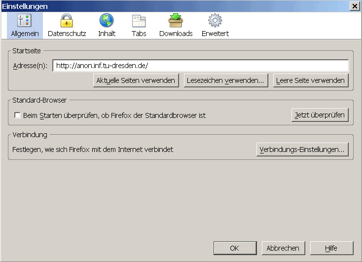
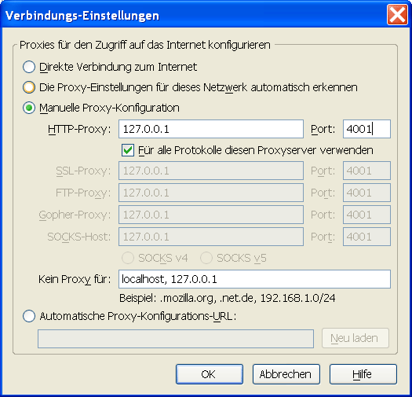
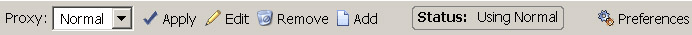
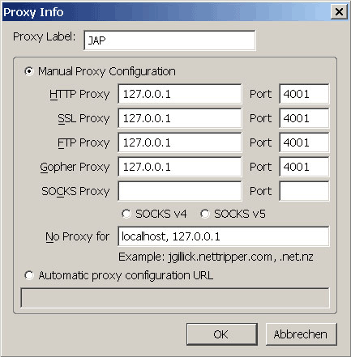

Browsereinstellungen
Inhalt
Browsereinstellungen
Inhalt  Browservorbereitung andere Browser Firefox
Vermeiden von Datenspuren
Browservorbereitung andere Browser Firefox
Vermeiden von Datenspuren
Browsereinstellungen
Inhalt Browservorbereitung andere Browser Firefox
Vermeiden von Datenspuren
Um JonDo in Mozilla-Firefox einzurichten gehen Sie folgendermaßen vor :
Wählen Sie im Menü Extras (Windows), bzw. Firefox (Mac OS X) das Untermenü Einstellungen.... Danach öffnet sich das Einstellungsfenster. Wählen Sie in diesem den Punkt Erweitert und dort den Tab Netzwerk:
Um den Proxyserver einzustellen klicken Sie auf die Schaltfläche Verbindungs-Einstellungen.... In dem Fenster das sich nun öffnet wählen Sie Manuelle Proxy-Konfiguration aus. Wählen Sie Für alle Protokolle den selben Proxy verwenden und tragen sie nun 127.0.0.1 als Server und 4001 als Port ein :
Wollen Sie Adressen festlegen, für die JonDo nicht verwendet werden soll, so können Sie im Feld Kein Proxy für: Ausnahmen festlegen, jeweils durch ein normales Komma getrennt.
Hinweis:
Falls Sie im JonDo einen anderen Listenerport eingestellt haben, müssen Sie diesen anstatt 4001 eintragen.
Für Firefox wird die Extension SwitchProxy empfohlen. Diese Erweiterung installiert eine Toolbar in Firefox, welche das schnelle Umschalten zwischen Proxies ermöglicht. So kann schnell zwischen dem Gebrauch von JonDo und nicht-anonymen Surfen umgestellt werden.
Hinweis:
Im JonDoFox-Browser ist diese Extension bereits enthalten.
Installation:
Es gibt zwei Möglichkeiten, um auf die Installationsseite der Extension zu gelangen:
Klicken Sie im Menü Extras auf Erweiterungen. Ein Fenster mit allen installierten Extensions öffnet sich. Klicken Sie auf Erweiterungen herunterladen um auf die Extensions-Seite für Firefox zu gelangen. Suchen sie dort nach dem SwitchProxy-Tool.
Klicken Sie danach auf den Link Install Now. Bestätigen Sie die Installation und starten Sie ihren Browser neu.
Einrichtung:
Sie sollten jetzt eine neue Toolbar sehen:

Klicken Sie in der Toolbar auf Add, um einen neuen Proxy einzurichten. Wählen Sie die den Proxytyp Standard und klicken Sie auf Next. Den Namem für die Proxyeinstellung können Sie im Feld Proxy Label angegeben, wobei Sie den Namen frei wählen dürfen. Geben Sie nun für jeden Proxytyp außer SOCKS (HTTP, SSL, FTP, Gopher) die Adresse 127.0.0.1 und den Port 4001 an:

Bestätigen Sie mit OK.
Optionale Einstellungen:
Sie können die SwitchProxy Toolbar ausblenden, damit Sie keinen Platz wegnimmt. Sämtliche Funktionalität bleibt erreichbar über das Kontextmenü (Rechtsklick) sowie über den Menüpunkt Extras -> SwitchProxy. Um die Toolbar auszublenden, klicken Sie auf Preferences in der Toolbar oder öffnen Sie über Extras -> Erweiterungen das Fenster mit allen Erweiterungen, wählen das Plugin SwitchProxy aus und klicken auf Einstellungen. Haken Sie Show toolbar ab, lassen Sie Show Context Menu und Show in Status Bar aktiviert.
Browsereinstellungen
Inhalt Browservorbereitung andere Browser Firefox
Vermeiden von Datenspuren